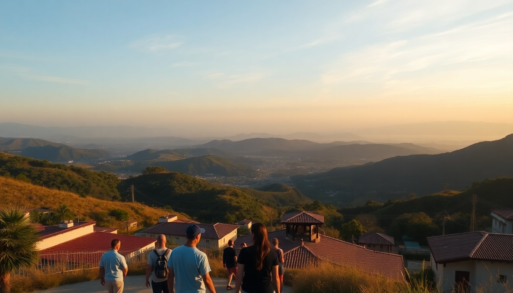

Best Day Trips from Bogotá: Zipaquira, Villa de Leyva & Coffee Region

I’ve spent weeks based in Bogotá, and the city itself is a beast—great food, chaotic traffic, and altitude that hits you on the stairs. But the real magic is escaping it. On three separate trips, I took the most popular day trips from Bogotá: the salt cathedral in Zipaquira, the colonial time capsule of Villa de Leyva, and a longer haul to the Coffee Region. Here’s what actually worked, what didn’t, and where I’d spend my money again.
What is there to see in Zipaquira besides the salt cathedral?
Zipaquira is a 45-minute bus ride from Bogotá’s Portal del Norte terminal, and honestly, the salt cathedral is the whole reason to go. But it’s not a church—it’s a working salt mine turned into a subterranean cathedral 180 meters underground. I booked a guided tour at the gate (no advance ticket needed on a Tuesday), and we walked through 14 stations of the cross carved into halite walls. The main nave is massive, lit with purple and blue lights that feel more like a nightclub than a sanctuary. It’s impressive, but I’d call it a half-day trip, not a full day.
- Catedral de Sal – The main attraction. Allow 2 hours for the guided tour.
- Mina de Sal – The old mining tunnels adjacent to the cathedral. Skip if short on time; it’s a dusty walk.
- Plaza de los Comuneros – The town square in Zipaquira. Grab an arepa de choclo from a street vendor here.
- Santuario del Sagrado Corazón – A small church uphill. Decent view, but not worth the climb if you’re tired.
I had lunch at Restaurante El Gran Plato near the plaza—good bandeja paisa, but the service was slow. For a quicker bite, the empanadas at the bus station are fine. Most people do Zipaquira as a morning trip and are back in Bogotá by 3 PM.
Is Villa de Leyva worth the 3-hour drive from Bogotá?
Yes, but with a caveat: it’s a long day. The bus from Bogotá’s Terminal Salitre takes 3 hours each way via the Autopista Norte. Villa de Leyva is a preserved colonial town with cobblestone streets, whitewashed buildings, and a main plaza that’s one of the largest in the Americas. I stayed overnight once, and that’s the better play—but if you’re set on a day trip, leave by 6 AM and you’ll have 4-5 hours there.
The town is walkable. I spent most of my time in the main Plaza Mayor, then walked to the Casa Museo de Antonio Nariño—a small museum dedicated to a Colombian independence hero. It’s free and quiet. For lunch, I ate at La Trattoria de la Villa on Calle 12. Their wood-fired pizza is solid, and the outdoor seating faces the plaza. Avoid the tourist trap restaurants with menus in English near the church; they’re overpriced.
- Plaza Mayor – The heart of the town. Sit on a bench and watch people.
- Casa Museo de Antonio Nariño – Free entry, 20 minutes max.
- Iglesia de Nuestra Señora del Rosario – The main church. Nice interior, but no photos allowed.
- El Fósil – A 10-minute walk from the plaza. An actual plesiosaur fossil embedded in a rock wall. Strange but cool.
- Mercado Artesanal – Handicrafts. Haggling is expected.
If you’re driving, park on the outskirts—the cobblestones are brutal on car suspension. The bus is easier; I used Expreso Bolivariano and it was punctual.
Can you really do the Coffee Region as a day trip from Bogotá?
Technically yes, but I wouldn’t recommend it. The Coffee Region (Eje Cafetero) is a 6-hour drive or a 1-hour flight from Bogotá. I flew into Armenia from Bogotá’s El Dorado airport on a 6 AM Viva Air flight, spent the day in Salento and a coffee finca, and flew back at 8 PM. It was exhausting. You’ll see the highlights—the Cocora Valley, a coffee tour, and the town of Salento—but you’ll be rushing.
If you have two days, it’s a better trip. But for a single day, here’s the efficient route: fly into Armenia, take a taxi (30 minutes) to Salento, walk the main street (Calle Real), have lunch at Brunch de Salento (get the arepa with hogao), then take a jeep to the Cocora Valley for a 1-hour hike among the wax palms. After that, taxi to a coffee finca like Finca El Ocaso for a tour (book ahead, 25,000 COP). Then taxi back to Armenia for your flight.
- Cocora Valley – The wax palm forest. Iconic. Go early to beat clouds.
- Salento – Colorful town with craft shops and trout restaurants.
- Finca El Ocaso – Coffee tour. 90 minutes, includes tasting. Good for beginners.
- Filandia – Quieter alternative to Salento. I skipped it on the day trip; too far.
- Armenia Airport – Small, efficient. Budget airlines like Viva and EasyFly fly here.
The flight cost me about $80 round trip. A direct bus from Bogotá to Armenia is cheaper but takes 6 hours each way—don’t do that for a day trip.
When is the best time to take these day trips?
Bogotá’s weather is unpredictable year-round, but the surrounding regions have clearer patterns. For Zipaquira, any dry day works—the mine is underground anyway. Villa de Leyva is best from December to February or June to August, when the town has fewer rainy days. I went in March and got a drizzle that made the cobblestones slippery but still enjoyable.
The Coffee Region has two dry seasons: December to February and July to August. I did my day trip in January and had blue skies in Salento. Avoid April, May, October, and November—those are the wettest months, and the Cocora Valley trails get muddy and slippery.
- Dry season (Dec-Feb, Jul-Aug) – Best for all three trips.
- Shoulder months (Mar, Jun, Sep) – Possible rain, but fewer crowds.
- Wet months (Apr-May, Oct-Nov) – Skip Villa de Leyva and the Coffee Region. Zipaquira is fine.
How do I get from Bogotá to these destinations without a car?
I don’t drive in Colombia, so I relied on buses and flights. For Zipaquira, take a bus from Portal del Norte (Terminal de Transporte del Norte). Look for the “Zipaquirá” sign on the second floor. It’s 5,000 COP and runs every 15 minutes. For Villa de Leyva, buses leave from Terminal Salitre (gate 22, Expreso Bolivariano). Tickets cost about 25,000 COP one way. Book the 6 AM bus to maximize your day.
For the Coffee Region, it’s a flight or nothing for a day trip. I used Viva Air from El Dorado to Armenia. Taxis from Armenia airport to Salento are fixed at 60,000 COP. Returning, I booked an 8 PM flight and had no issues.
- Zipaquira – Bus from Portal del Norte. 45 minutes.
- Villa de Leyva – Bus from Terminal Salitre. 3 hours.
- Coffee Region – Flight from El Dorado to Armenia. 1 hour.
FAQ
Is the Zipaquira salt cathedral worth it if I’m not religious? Yes. I’m not religious, and I still found the scale and history impressive. It’s more of an engineering feat than a spiritual experience. The guided tour explains how the miners carved the cathedral over decades. Just don’t expect a quiet, meditative space—it’s crowded and commercial.
Can I visit Villa de Leyva and Zipaquira in the same day? Technically, but you’ll be rushing. Zipaquira is north of Bogotá, and Villa de Leyva is northeast. The drive between them is about 2 hours on back roads. I’d pick one. If you have a rental car, you could do Zipaquira in the morning, drive to Villa de Leyva for lunch, and return by evening, but you’ll skip the best parts of both.
What should I pack for a Coffee Region day trip? Rain jacket, hiking shoes, and cash. The Cocora Valley gets misty even in dry season. The coffee fincas don’t take cards for tours. Also bring sunscreen—the sun is strong at altitude. Leave your drone at home; many fincas ban them.
Conclusion
- Zipaquira is a solid half-day trip. See the salt cathedral, eat an arepa, and be back by lunch.
- Villa de Leyva is better as an overnight, but doable as a long day trip if you leave early.
- The Coffee Region is a stretch for a day trip. Fly, don’t bus. And if you have two days, spend them in Salento and Cocora.
- Buses from Terminal Salitre and Portal del Norte are cheap and reliable. Flights from El Dorado are your only option for the Coffee Region.
- Dry season (Dec-Feb or Jul-Aug) gives you the best weather for all three.